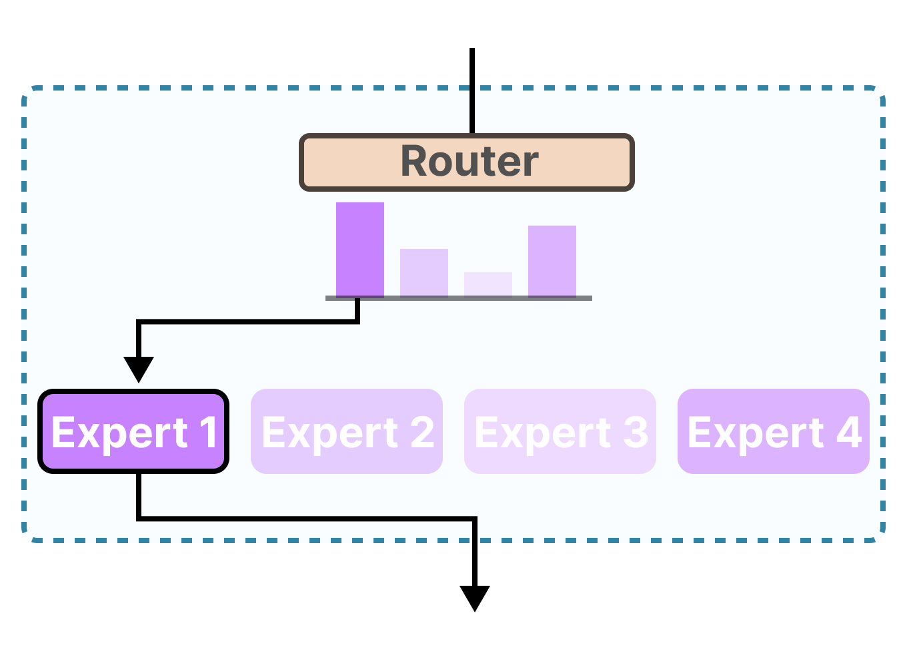

在做 LLM 的 RL post-training 时，我们常常默认一个前提：rollout 时模型采样到的行为，和训练时重新计算 log probability 的模型，是同一个 policy。只有这样，on-policy RL 的假设才成立，像 PPO、GRPO 这类方法里的 importance ratio、KL 约束、old policy reference 才是有意义的。
但现实并不是这样。
今天很多 RL 系统，采样侧会用 vLLM、SGLang、TensorRT-LLM 这类高吞吐推理引擎，而训练侧则用 FSDP、Megatron、DeepSpeed 之类的训练框架。两边的 kernel、数值精度、并行切分策略、batching 方式都不同。结果是：同样的 token 序列，rollout engine 和 training engine 给出的 logits 并不相同。
这就是所谓的 train-infer mismatch。因为 dense 模型的结构是连续的，所以影响比较小；单对于 MoE 模型来说，由于 Expert Router 的存在，会导致严重的训练不稳定。
什么叫训推一致
训推一致的一个直接定义是：
\[ \pi_\theta^{rollout}(y_t \mid x, y_{<t}) = \pi_\theta^{train}(y_t \mid x, y_{<t}) \]
这里有三个关键前提：
- 输入是同一个 prompt 和同一段前缀 token 序列
- 比较的是 rollout 引擎和 train 引擎
- 两边输出的 logits 或对应概率分布一致
如果同样的序列，进入训练引擎和推理引擎后得到的 logits 不同，那么训推就不一致。这个差异表面上只是“两个 logprob 不一样”，但在 RL 里它会直接污染梯度估计。
为什么会发生不一致
第一层是数值计算本身。GPU 浮点运算不是严格结合的，累加顺序一旦变化，结果就可能不同。虽然 LLM 前向并不总是依赖 atomic add，但只要 reduction 顺序、tile 切分方式、内存布局或 kernel 选择发生变化，就可能带来细微数值偏移。
第二层是系统级实现差异。即使单个 kernel 在固定输入上是 deterministic 的，整个 serving system 仍然可能不是 batch invariant 的。比如动态 batch size 不同，attention 在 decode 阶段可能选择不同的 split-KV 策略；不同的 batch shape 也可能让 compiler 选择不同的 tile 或 warp 划分。于是同一个请求，只因为旁边拼了不同数量的请求，最后就可能得到不同的 logits。
第三层是训练和推理栈的目标本来就不同。推理引擎追求的是 tokens/sec，会更积极地使用低精度、batch-variant kernel、speculative decoding 等优化；训练框架更关心梯度计算的稳定性和反向传播，因此往往保留更高精度或不同的实现路径。这种“优化目标不一致”，会自然演化成“行为分布不一致”。
为什么 MoE 上这个问题更严重
在相同的误差程度下，MoE 多了一个放大误差的离散路由层。
MoE 的核心结构是 router + experts。router 会根据当前 hidden state 选择少数几个 expert 参与计算。也就是说，MoE 不是所有参数都参与前向，而是先做一次路由决策，再按这个决策走不同的计算分支。

这会带来两个后果。
第一，router 对数值误差极度敏感。对于 dense 模型，训推之间哪怕 logits 有一点偏移，通常也只是 token 概率略微变化；而对 MoE 来说，哪怕 router score 只发生很小的扰动，也可能让 top-k expert 发生切换。一旦 expert 变了，后续整层 FFN 路径都变了。
第二，路径切换会让 RL 里的 off-policy 问题陡然恶化。采样时你是沿着 rollout engine 选中的 expert 路径生成数据，但训练时重算 old logprob 时，training engine 可能激活的是另一组 experts。于是你以为自己在做 on-policy correction，实际上是在拿一条路径上的样本，去估另一条路径下的概率。这会让 importance sampling ratio 变得不可靠，甚至完全失真。
所以在 MoE 模型里，训推不一致，直接导致了 KL 指标变差，还会引发一系列 cascading effect：
- router 的微小误差会被离散路由放大
- 不同 expert 激活会导致更严重的分布偏移
- importance sampling 的估计方差和偏差都会迅速变坏
- 最终表现为 reward、entropy、gradient norm、PPL 等指标出现尖峰甚至训练崩溃
这会怎样破坏 RL 训练
如果从 RL 的角度看，train-infer mismatch 的本质是：你用采样分布 \(\mu\) 拿到了数据，但训练时优化的是另一个分布 \(\pi\) 下的目标，而且这两个分布之间的差异并不小。
当这种差异存在时，问题通常分成两类：
Bias 训练得到的梯度不再指向真实优化目标，优化器会系统性地朝错误方向更新。
Variance importance ratio 变得很大，梯度噪声暴涨。即便训练不立刻崩，也会被迫把学习率压得很低，训练几乎停滞。
这也是为什么很多系统里你会看到一种表面矛盾的现象：训练指标没有马上 explode，但 reward 上不去，或者一旦进入更长响应、更复杂 agent rollout、多轮 tool use 场景就开始不稳定。不是算法突然失效，而是 mismatch 被长序列和复杂状态分布放大了。
为什么普通 dense 模型影响相对较小
dense 模型当然也会有 mismatch，但它至少没有路由层这个离散放大器。
对 dense 模型来说，训推差异更多表现为：
- 同一个 token 的概率有一些偏差
- 序列越长，这些偏差沿着自回归链条累计
- 重要性采样会变得越来越 noisy
对 MoE 模型来说，上面这些问题还会额外叠加：
- router score 的微小误差
- top-k experts 的切换
- 整条计算路径变化
- 训练侧与推理侧 logprob 出现更剧烈偏差
所以可以把它理解为：dense 模型的 mismatch 更像是“概率连续漂移”，MoE 的 mismatch 更像是“概率漂移 + 计算图切换”。
现在有哪些解决思路
从工程上看，主流方案大致分成三类。
1. 修基础设施，让训推尽量一致
第一条路线是最“硬核”的：直接对齐 training stack 和 inference stack，让两边在 kernel 层和系统层尽可能得到一致结果。
这类工作的核心关键词通常是 deterministic inference 和 batch-invariant kernels。它的目标不是“平均差不多”，而是同一个请求在不同 batch 条件下，仍然尽量得到相同结果。
典型思路包括：
- 固定 reduction 顺序
- 避免 batch size 改变时触发不同的 split 策略
- 为 matmul、RMSNorm、attention 提供 batch-invariant 实现
- 在训练侧补齐与推理侧一致的前向/反向路径
这条路线的好处很明显：如果训推真的足够一致，那么 on-policy RL 的假设就重新站稳了。
但代价也很明显：
- 工程复杂
- 适配不同模型和后端的成本高
- 往往会损失吞吐
换句话说，它更像是在拿性能换一致性。
2. 承认不一致存在，在算法侧做 correction
第二条路线更现实：既然训推完全对齐太贵，那就承认 rollout distribution 和 training distribution 不一样，然后在算法侧做 off-policy correction。
最直接的思路是 importance sampling。也就是对 rollout 样本乘上：
\[ \rho = \frac{\pi_{train}(y)}{\pi_{rollout}(y)} \]
但这里很快会碰到一个难点：对长序列自回归模型，sequence-level ratio 是 token ratio 的乘积，长度一长，variance 很容易指数级爆炸。
于是工业界开始使用各种变体：
- TIS，truncated importance sampling
- MIS，masked importance sampling
- GSPO，sequence-level IS
- rejection sampling 或 geometric mean rejection
3. 对 MoE 做 routing replay / keep routing
对 MoE 来说，还有一条非常针对性的路线：不要只修概率，直接修路由。
因为问题的核心不只是 logprob 偏差，而是 router 决策不一致导致 expert 激活不同。所以很自然的做法是：
- 在 rollout 时记录 router distribution 或 routing decision
- 在训练重算时复用同样的 routing
- 强制训练侧走和推理侧相同的 expert 路径
这类方法通常被称为 keep routing 或 routing replay。
它特别适合 MoE，因为它直接打在问题根上：既然数值误差会把 router 推向不同 expert，那就不要给 router 第二次“自由发挥”的机会，而是把 rollout 时的路径保留下来。
这个思路已经在一些工作里出现，例如 rollout routing replay。你的笔记里也提到，MIMO R3 和 DeepSeek V3.2 都采用了相近方向的思路。
GSPO 为什么值得关注
GSPO 的一个关键优势在于，它把关注点从 token-level likelihood 转到了 sequence-level likelihood。直观上，这意味着它对单个 token 上的局部波动、甚至局部 routing fluctuation，没有那么敏感。
这带来两个后果：
- 它可以减少对 routing replay 这类基础设施技巧的依赖
- 它更适合在存在训推不一致的真实系统里工作
这不代表 infra 问题不存在了，而是说：如果算法本身对局部 mismatch 更鲁棒，那么系统的可用工作区间会更大。
一个更实用的判断框架
如果把这些方案压缩成工程决策，我觉得可以用下面这个框架来判断。
如果你的 mismatch 很小，系统比较干净，主要目标是尽量保留样本效率，那么可以优先考虑：
- 更好的 deterministic / batch-invariant infra
- sequence-level TIS 这类 bias-variance trade-off 更好的 correction
如果你的 mismatch 很大，尤其是：
- MoE 模型
- 长响应
- tool use / agent rollout
- 多轮交互
- 推理和训练后端差异很大
那只靠普通 token-level IS 往往不够。你需要更激进地考虑：
- sequence-level MIS
- routing replay / keep routing
- 直接过滤掉高 mismatch 样本
也就是说，在复杂场景里，“保住训练稳定性”通常比“榨干每一条样本”更重要。
我对这个问题的一个核心判断
我现在越来越倾向于把 train-infer mismatch 看成 RL engineering 里的一个一级问题，而不是一个实现细节。
过去大家容易把 RL 训练不稳定归因于 reward noisy、advantage 估计不好、学习率不对、KL 不合适。但在现代 LLM RL 系统里，尤其是训练后端和推理后端解耦以后，训推不一致本身就是一个独立变量。
而在 MoE 上，这个变量的破坏性会更强，因为 MoE 把连续数值误差升级成了离散计算路径差异。你不是只在比较两份“差不多的 logits”，而是在比较两条可能激活不同 expert 的前向路径。
这也是为什么我认为，MoE 的 RL 稳定性问题，不能只从 optimizer 或 reward design 上找答案。很多时候，真正的问题在更底层：
- 你的 rollout engine 和 training engine 是否在算同一个 policy
- 你的 router 在训推之间是否会发生路径漂移
- 你的 IS correction 修正的是“概率偏差”，还是“路径偏差”
总结
MoE 的 RL 训练很容易出现一种错觉：表面上是在做 on-policy RL，实际上是高偏差、高方差的 off-policy 系统。RL 的 train-infer mismatch 在 MoE 模型里则会因为动态路由而被进一步放大，最终从 logprob 偏差升级为 expert path mismatch，直接破坏 on-policy 假设与训练稳定性。
所以解决这个问题，要同时看三层：
- Infra：尽量做 deterministic / batch-invariant inference
- Importance Sampling：使用更合理的 sequence-level correction，而不是只做 token-level patch
- MoE-Specific：Keep routing / routing replay 强制训推一致的路径选择